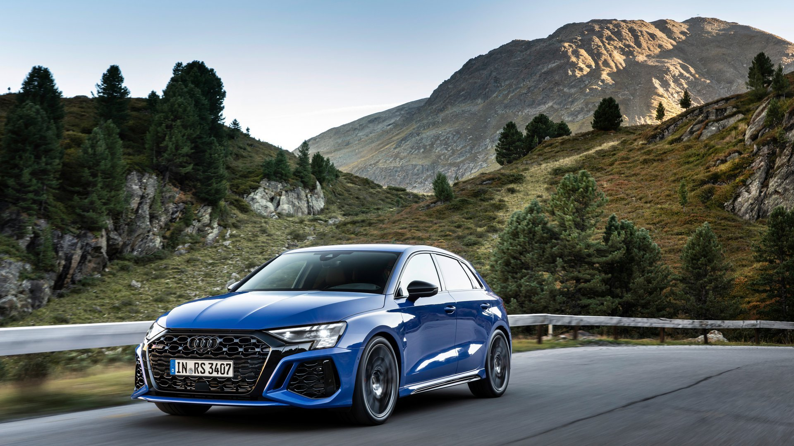

| Caractéristique | Valeur |
|---|---|
| Poids | 1570 kg |
| 0-100 km/h | 3.8 secondes |
| Vitesse maximale | 290 km/h |
| Puissance | 400 ch |
| Couple | 500 Nm |
| Transmission | Automatique |
| Nombre de vitesses | 7 |
| Consommation mixte | 8.9 L/100km |
| Prix neuf | 65 000 € |
L'Audi RS3 2022 (8Y) pousse le concept de compacte sportive à son paroxysme. Son 5-cylindres turbo de 2.5L TFSI développe 400 ch, un record pour cette cylindrée. Le système Torque Splitter permet de répartir le couple entre les roues arrière pour un comportement plus joueur. Avec un 0-100 km/h en 3.8 secondes, elle rivalise avec des supercars. Son design agressif et sa sonorité unique en font l'une des compactes les plus désirables du marché.
Première génération 340 ch
367 ch puis 400 ch
Version 4 portes
Torque Splitter 400 ch